App Memora y pastillero inteligente
Versión 1.1 · octubre de 2026
Memora tiene dos partes que trabajan juntas:
Si pasan 30 minutos y la toma no se confirma, Memora les avisa a las personas que te cuidan.
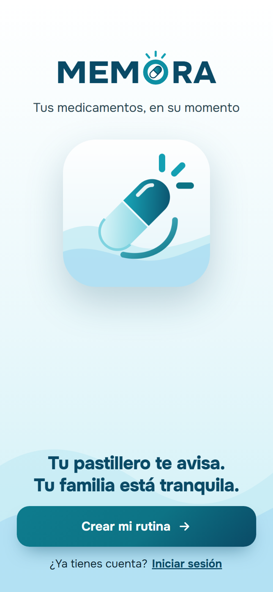
La primera vez que abras Memora, el celular te preguntará si permites notificaciones. Toca Permitir: así te llega el recordatorio a la hora de cada toma y, si cuidas a alguien, el aviso cuando no confirma.
| Lo que ves u oyes | Qué significa |
|---|---|
| Luz verde fija | Está conectado a internet y a Memora. |
| Luz verde apagada | Está sin internet. Igual suena a sus horas. |
| Bip-bip y luz que parpadea | Es hora de una toma. |
| Botón | Presiónalo cuando suene: apaga la alarma y avisa en la app que ya tomaste. |
| Botón presionado 10 segundos (sin alarma) | Borra el Wi-Fi guardado, para conectarlo a otra red. |
Las 4 filas de colores son las 4 tomas del día: mañana (amarilla), mediodía (celeste), tarde (lila) y noche (rosa). Cada columna es un día, de lunes a domingo.
El pastillero guarda tu horario y la hora, así que suena aunque se vaya el internet.
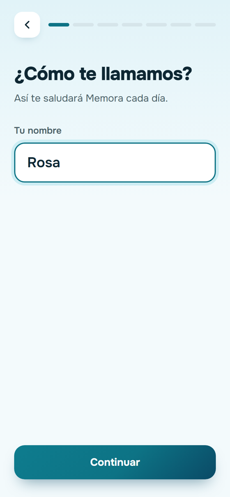
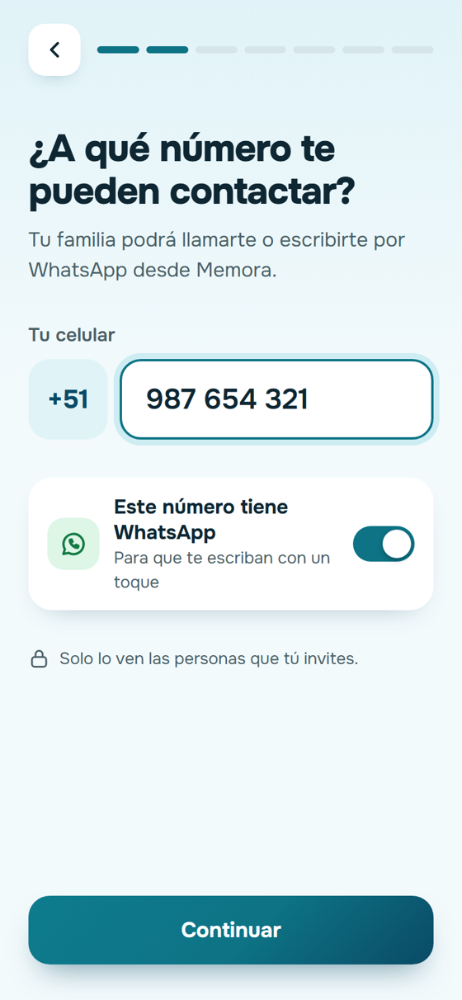
Si solo cuidas a alguien, la app no te pide horarios ni medicamentos. Después de crear la cuenta te pide el código de invitación (sección 12).
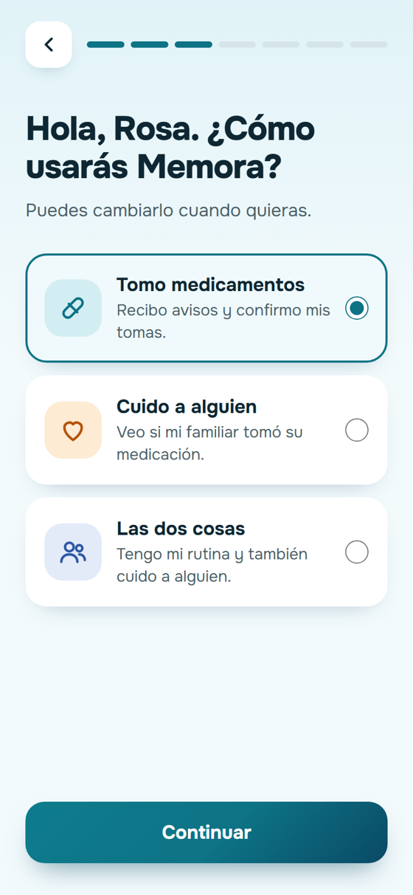
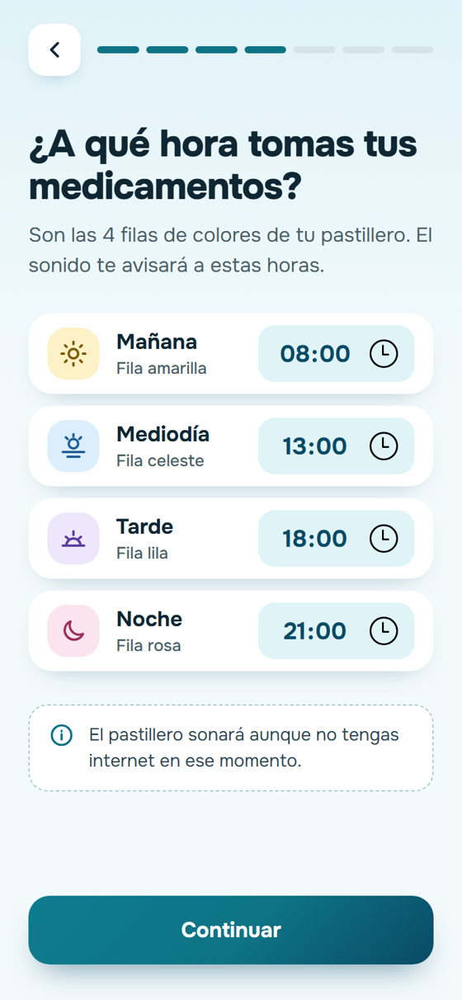
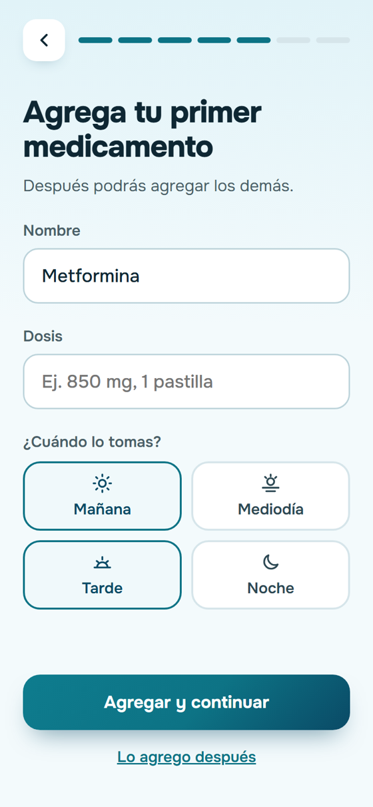
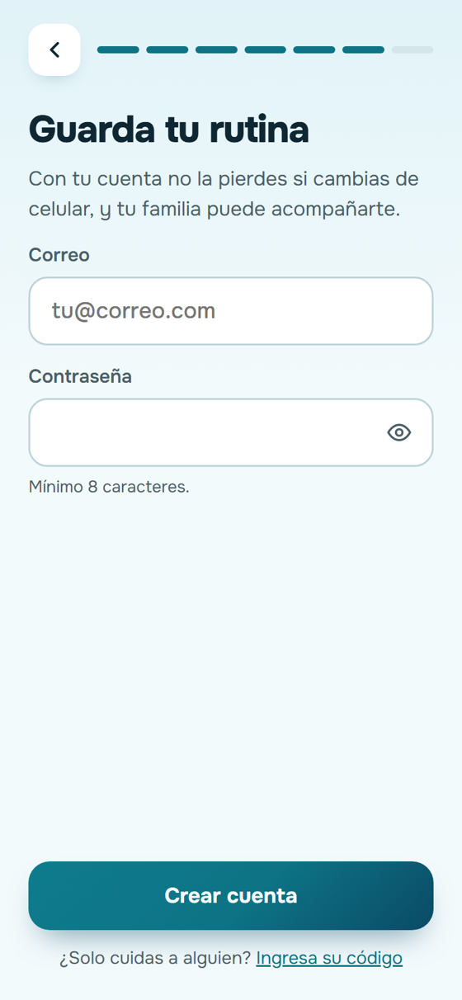
Vincúlalo a tu cuenta
Dale tu Wi-Fi (solo la primera vez)
Si usas la zona Wi-Fi de otro celular, desactiva su apagado automático. Muchos celulares la apagan cuando nadie está conectado y el pastillero se queda sin internet.
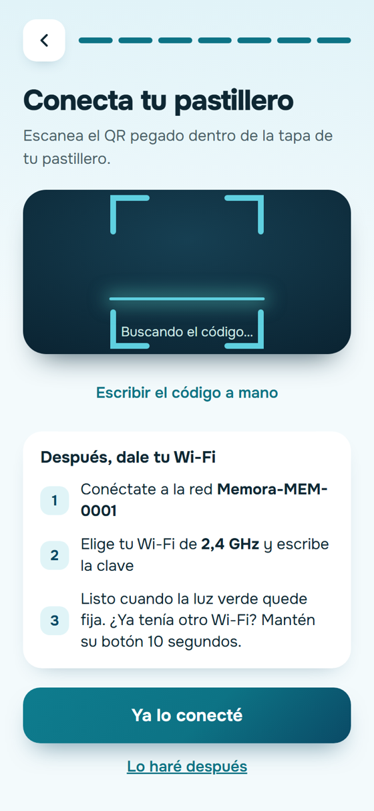
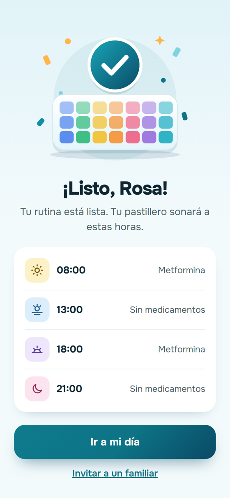
Es la pantalla principal. Arriba ves la toma que toca y qué compartimento abrir. En la esquina, En línea indica que el pastillero está conectado.
Cuando el pastillero suena tienes tres opciones:
A la misma hora te llega una notificación al celular, por ejemplo Hora de tus pastillas de la tarde. Llega aunque la app esté cerrada.
Si te equivocaste, toca Deshacer y la toma vuelve a quedar pendiente.
Abajo está la lista del día: Tomada con su hora, Ahora, Pendiente o Libre (sin medicamentos en ese momento).
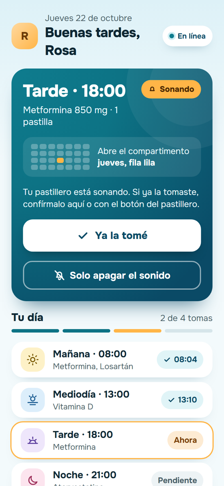
Toca la pestaña Pastillero.
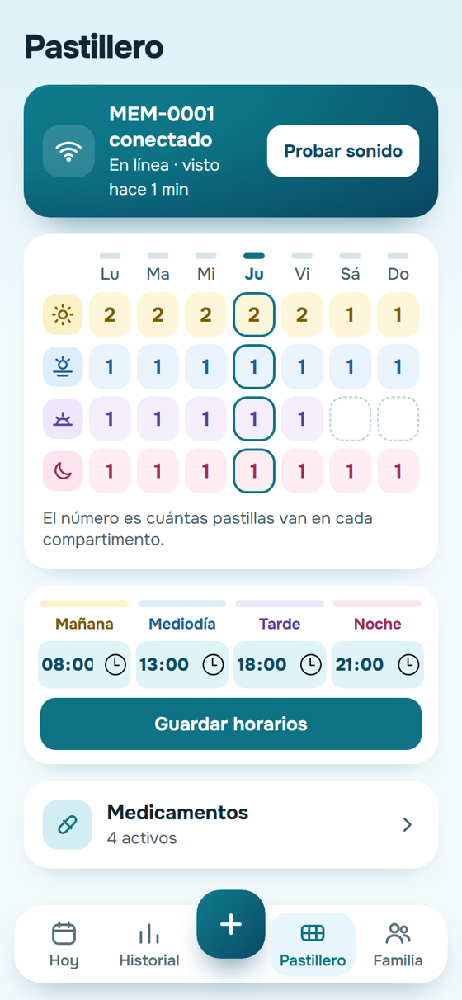
Cada cambio actualiza solo el horario del pastillero: solo suena en los momentos que tienen medicamento.
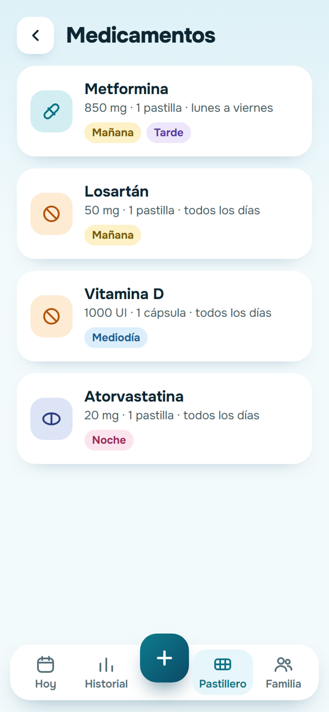
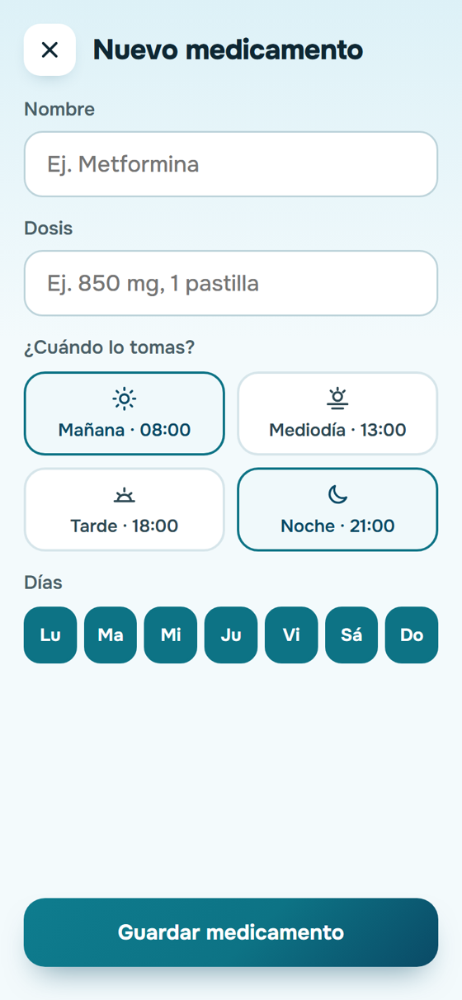
La pestaña Historial muestra tu semana: cada barra es un día, en turquesa las tomas confirmadas y en naranja las que no se confirmaron.
Debajo ves el porcentaje de tomas confirmadas de las últimas 4 semanas y la lista de tomas sin confirmar de esta semana.
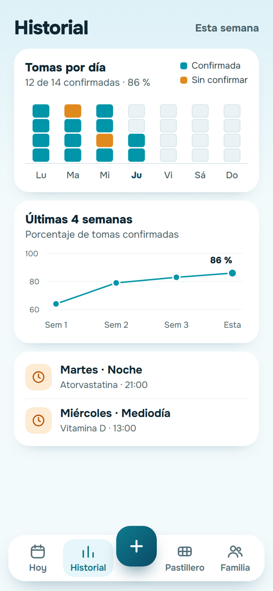
Junto a cada familiar tienes botones para llamarlo o escribirle por WhatsApp. El interruptor Puede editar mis horarios le da permiso para cambiar tus horas y medicamentos. Las tomas solo las confirmas tú.
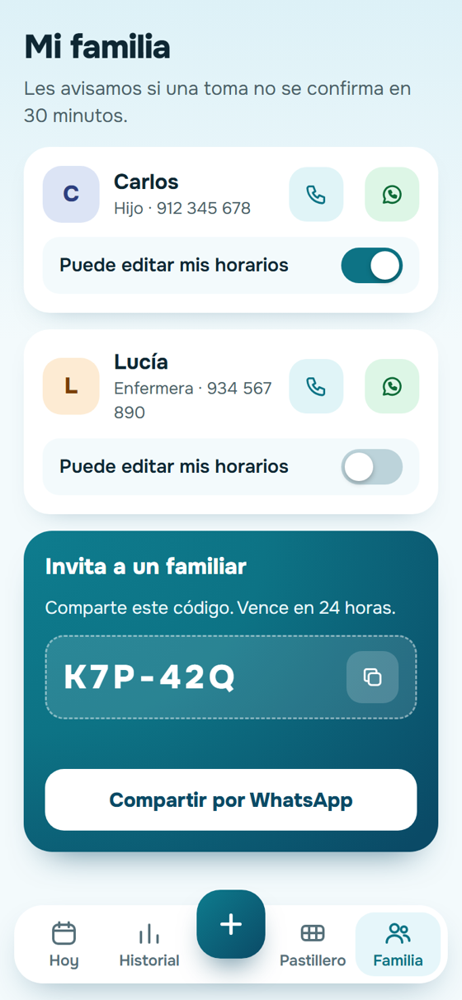
Toca tu inicial, arriba a la izquierda en Hoy.
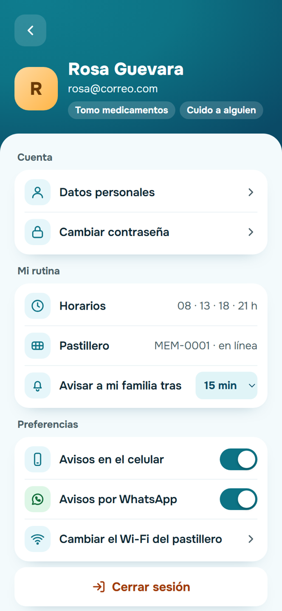
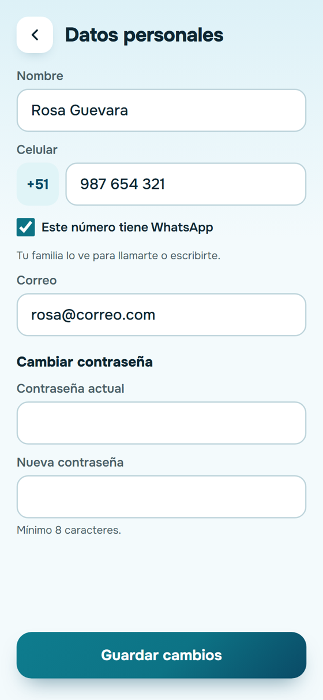
Como cuidador no puedes confirmar tomas. Si tu familiar ya la tomó, pídele que presione el botón del pastillero.
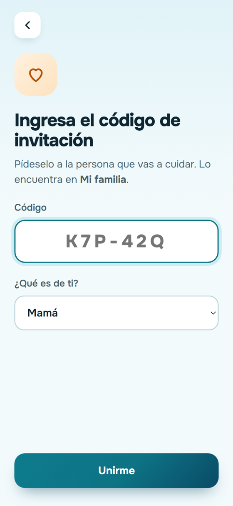
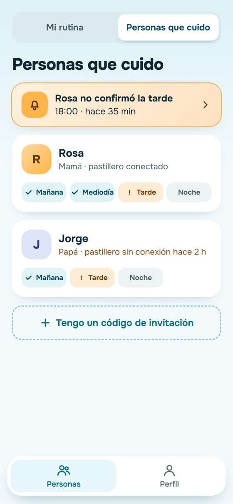
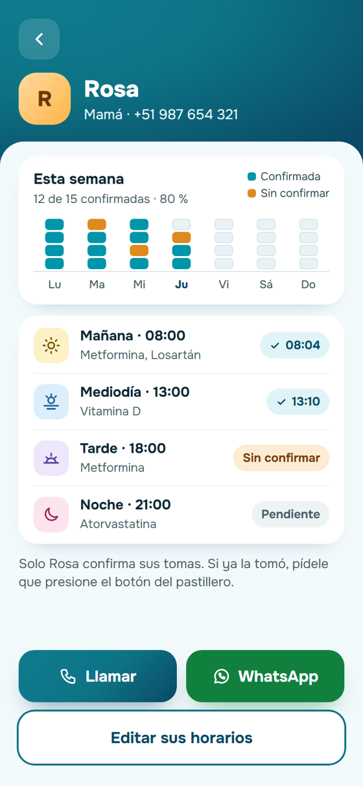
Si cambias de celular o cerraste sesión, toca Iniciar sesión en la pantalla de inicio y escribe tu correo y contraseña. Tu rutina sigue guardada.
Si no recuerdas la contraseña:
El código vence en 15 minutos y sirve una sola vez. Si te equivocas 5 veces, pide uno nuevo después de 15 minutos. Al cambiar la contraseña se cierra tu sesión en los otros celulares.
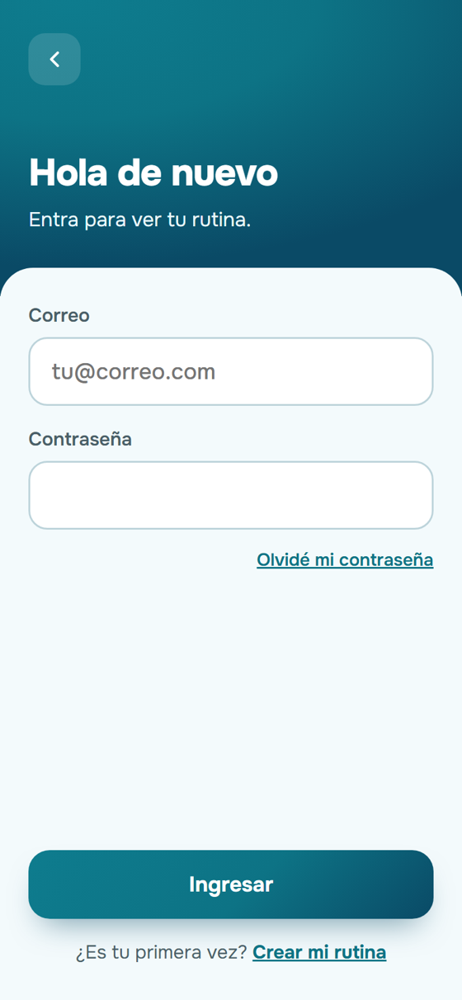
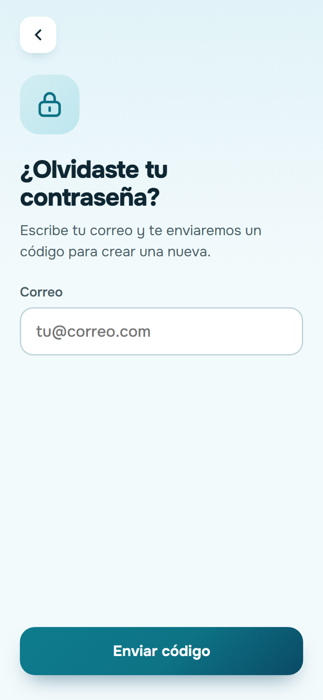
| Problema | Qué hacer |
|---|---|
| La app dice Sin conexión o la luz verde no queda fija | Revisa que el Wi-Fi del pastillero esté prendido y sea de 2,4 GHz. Si cambiaste de red, mantén su botón 10 segundos y repite la sección 5. |
| No aparece la red Memora-MEM-0001 | Desenchufa el pastillero y vuelve a enchufarlo. La red aparece cerca de un minuto después y dura 3 minutos. |
| No sonó a la hora | Ese momento del día debe tener un medicamento para ese día. Revisa la cuadrícula en Pastillero. |
| La app no muestra la toma como tomada | Espera unos segundos: la app se actualiza sola cada 5 segundos. Si no hay internet, confírmala con Ya la tomé. |
| No me llegan las notificaciones | Revisa que Memora tenga permiso de notificaciones en los ajustes del celular y que Avisos en el celular esté activado en tu perfil. Luego cierra sesión y vuelve a entrar. Si tu celular ahorra batería, quita a Memora de esa lista. |
| Mi familiar no recibe avisos | Debe tener la app instalada, haber aceptado las notificaciones y tener activado Avisos en el celular en su perfil. |
| No me llega el código para cambiar la contraseña | Espera un minuto y revisa spam. Comprueba que escribiste el mismo correo de tu cuenta. Si pediste varios, usa solo el último. |
| El QR no se lee | Toca Escribir el código a mano y copia el código escrito debajo del QR. |